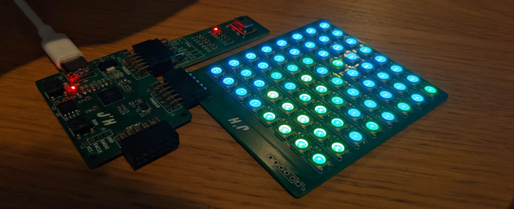

After perviously building a PMod Infrared Sensor board, that was perviously streaming data over the serial link from the RP2040 PMod board to a PC which was using Python to display the data. The next step is to look at using a screen to display the data from the infrared Sensor.
The screen that I looked to use is a custom board based on using the Neopixel LED's that I have previously used with the RP2040 board, this allows a simple way to display the data, the screen which is also a 8x8 grid the same resolution as the sensor. The screens which I assembled last month, provide a great way to display the data, the first task is to look at connecting every together, then building a colour map to display the temperature values.
Sometime you can't beat an evening spent playing with LEDs making patterns #leds #electronics pic.twitter.com/kchJTo22p3
— James Horton (@JamesjHorton) August 30, 2021
The screen is essentially a string of 64 WS2821B LED's, in an 8 by 8 grid, which by sending RGB values over a serial link between the LED's we can build up a 2D picture. The data is transmitted to the LED's using the PIO state machine from the Raspberry Pi Pico example. This linked in well with the serial data stream that comes from the 8x8 Thermal Sensor, to provide an image that updates quickly.
The code for reading the values from the PMod thermal camera is the same as before, but rather than writing the data to the serial link, we now store the tempurate readings in a 64 value array, which we will then write to the NeoPixels.
// Write the values to the Neopixel Array
for (int i = 0; i < (64); i++) {
int value = 90 - (result[POS_LOOKUP[i]]*0.25);
put_pixel(urgb_u32(RGB_LOOKUP[value][0]/BRIGHTNESS,RGB_LOOKUP[value][1]/BRIGHTNESS,RGB_LOOKUP[value][2]/BRIGHTNESS));
}
sleep_ms(100); //required delay at TX sequence
Two important points here, is that we reduce the brightness, which divides each of the RGB values by the same number, keeping the colour the same but reducing the brightness of the LED's overall, another element that also has to be correct for is rotating the input data so that it is displayed in the same position on the screen relative to the Sensor. to do this I use a array, POS_LOOKUP which returns the thermal sensor value, for each of the LED positions.
// position lookup table to map the positions rotated 90 degrees
const int POS_LOOKUP[] = {0, 8,16,24,32,40,48,56,
1, 9,17,25,33,41,49,57,
2,10,18,26,34,42,50,58,
3,11,19,27,35,43,51,59,
4,12,20,28,36,44,52,60,
5,13,21,29,37,45,53,61,
6,14,22,30,38,46,54,62,
7,15,23,31,39,47,55,63};
The values for the image we create, are based on a static colour-map that is included in the main file, with the value input returning the appropriate colour for that temperature.
// Lookup table the colourmap
const int RGB_LOOKUP[][3] = {{255,14,240},{255,13,240},{255,12,240},{255,11,240},
{255,10,240},{255,9,240},{255,8,240},{255,7,240},
{255,6,240},{255,5,240},{255,4,240},{255,3,240},
{255,2,240},{255,1,240},{255,0,240},{255,0,224},
{255,0,208},{255,0,192},{255,0,176},{255,0,160},
{255,0,144},{255,0,128},{255,0,112},{255,0,96 },
{255,0,80 },{255,0,64 },{255,0,48 },{255,0,32 },
{255,0,16 },{255,0,0 },{255,10,0 },{255,20,0 },
{255,30,0 },{255,40,0 },{255,50,0 },{255,60,0 },
{255,70,0 },{255,80,0 },{255,90,0 },{255,100,0},
{255,110,0},{255,120,0},{255,130,0},{255,140,0},
{255,150,0},{255,160,0},{255,170,0},{255,180,0},
{255,190,0},{255,200,0},{255,210,0},{255,220,0},
{255,230,0},{255,240,0},{255,250,0},{253,255,0},
{215,255,0},{176,255,0},{138,255,0},{101,255,0},
{62,255,0 },{23,255,0 },{0,255,16 },{0,255,54 },
{0,255,92 },{0,255,131},{0,255,168},{0,255,208},
{0,255,244},{0,228,255},{0,212,255},{0,196,255},
{0,180,255},{0,164,255},{0,148,255},{0,132,255},
{0,116,255},{0,100,255},{0,84,255 },{0,68,255 },
{0,50,255 },{0,34,255 },{0,18,255 },{0,2,255 },
{0,0,255 },{1,0,255 },{2,0,255 },{3,0,255 },
{4,0,255 },{5,0,255 }};
With this colour map we can now start creating images on the NeoPixel based screen from the thermal sensor, which are easy to understand.

The next stage is to look at getting my head around implementing a similar thing on the my FPGA boards, on either the colorlite i5 or iceBreaker boards.